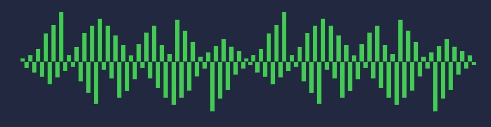

Audio Overview

Audio Features
Qt Multimedia offers a range of audio classes that cover both low and high level approaches to: audio input, output and processing.
Audio Implementation Details
Playing Compressed Audio
For playing media or audio files that are not simple, uncompressed audio, you can use the QMediaPlayer C++ class, or the MediaPlayer QML type. The QMediaPlayer class and associated QML types are also capable of playing video, if required.
See Supported Media Formats for more detail.
The media player needs to be connected to a QAudioOutput object (or the QML AudioOutput element) to play back audio.
Here is how you play a local file using C++:
player = new QMediaPlayer; audioOutput = new QAudioOutput; player->setAudioOutput(audioOutput); // ... player->setSource(QUrl::fromLocalFile("/Users/me/Music/coolsong.mp3")); audioOutput->setVolume(50); player->play();
The same functionality in QML:
MediaPlayer { audioOutput: AudioOutput {} source: "file:///path/to/my/music.mp3" Component.onCompleted: { play() } }
Recording Audio to a File
To record audio to a file, you need to create a capture session and connect to it an audio input and a recorder. These elements are implemented with the QMediaCaptureSession, QAudioInput, and QMediaRecorder classes. The default constructed QAudioInput selects the system default audio input. The recorder controls the recording process with a simple record() and stop() functions. Additionally, you can use it to select the output location, audio encoder, or file container format.
A session recording audio from the default microphone would look as follows in C++:
QMediaCaptureSession session; QAudioInput audioInput; session.setAudioInput(&input); QMediaRecorder recorder; session.setRecorder(&recorder); recorder.setQuality(QMediaRecorder::HighQuality); recorder.setOutputLocation(QUrl::fromLocalFile("test.mp3")); recorder.record();
In QML, the same can be achieved by:
CaptureSession { audioInput: AudioInput {} mediaRecorder: MediaRecorder { id: recorder outputLocation: "file:///path/to/test.mp3" } Component.onCompleted: { recorder.record() } }
QMediaCaptureSession also provides support for more complex use cases such as image capturing or video recording.
Low Latency Sound Effects
In addition to raw access to sound devices, the QSoundEffect class (and SoundEffect QML type) offers a more abstract way to play sounds. This class allows you to specify a WAV format file, which can then be played with low latency when necessary.
You can adjust the:
- Number of loops in which a sound effect is played.
- Volume of the sound effect.
- Muting of the sound effect.
Low Level Audio Playback and Recording
The C++ API of Qt Multimedia offers classes for raw access to audio input and output facilities, allowing applications to receive raw data from devices like microphones, and to write raw data to speakers or other devices. Generally these classes do not do any audio decoding, or other processing, but they can support different types of raw audio data.
The QAudioSink class offers raw audio data output, while QAudioSource offers raw audio data input. The available hardware determines what audio outputs and inputs are available.
Push and Pull
The low level audio classes can operate in two modes - push and pull. In pull mode, the audio device is started by giving it a QIODevice. For an output device, the QAudioSink class will pull data from the QIODevice (using QIODevice::read()) when more audio data is required. Conversely, for pull mode with QAudioSource, when audio data is available then the data will be written directly to the QIODevice.
In push mode, the audio device provides a QIODevice instance that can be written or read to as needed. Typically, this results in simpler code but more buffering, which may affect latency.
Decoding Compressed Audio to Memory
In some cases you may want to decode a compressed audio file and do further processing yourself. For example, mixing multiple samples or using custom digital signal processing algorithms. QAudioDecoder supports decoding local files or data streams from QIODevice instances.
Here's an example of decoding a local file:
QAudioFormat desiredFormat; desiredFormat.setChannelCount(2); desiredFormat.setSampleFormat(QAudioFormat::Int16); desiredFormat.setSampleRate(48000); QAudioDecoder *decoder = new QAudioDecoder(this); decoder->setAudioFormat(desiredFormat); decoder->setSource("level1.mp3"); connect(decoder, &QAudioDecoder::bufferReady, this, &AudioDecodingExample::readBuffer); decoder->start(); // Now wait for bufferReady() signal and call decoder->read()
Spatial Audio
The Qt Spatial Audio module provides an API for implementation sound fields in 3D space.
Reference Documentation
C++ Classes
A stereo overlay sound | |
Represents a collection of audio samples with a specific format and sample rate | |
Implements decoding audio | |
Information about audio devices and their functionality | |
Manages a three dimensional sound field | |
Stores audio stream parameter information | |
Represents an input channel for audio | |
Defines the position and orientation of the person listening to a sound field defined by QAudioEngine | |
Represents an output channel for audio | |
Interface for sending audio data to an audio output device | |
Interface for receiving audio data from an audio input device | |
Allows capturing of audio and video content | |
Used for encoding and recording a capture session | |
Way to play low latency sound effects | |
A sound object in 3D space | |
Contains enums used by the audio classes |
QML Types
A stereo overlay sound | |
Manages sound objects inside a 3D scene | |
An audio input to be used for capturing audio in a capture session | |
Defines the position and orientation of the person listening to a sound field defined by a AudioEngine | |
An audio output to be used for playback or monitoring of a capture session | |
Allows capturing of audio and video content | |
Adds media playback to a scene | |
For encoding and recording media generated in a CaptureSession | |
Type provides a way to play sound effects in QML | |
A sound object in 3D space | |
Describes an audio device | |
Provides meta-data for media files |
Examples
Testing the available audio devices and their configuration. | |
Enabling audio playback using the QAudioSink class. | |
Discovering the available devices and supported codecs. | |
Recording audio using the QAudioSource class. | |
Shows some of the capabilities of the spatial audio engine in Qt |